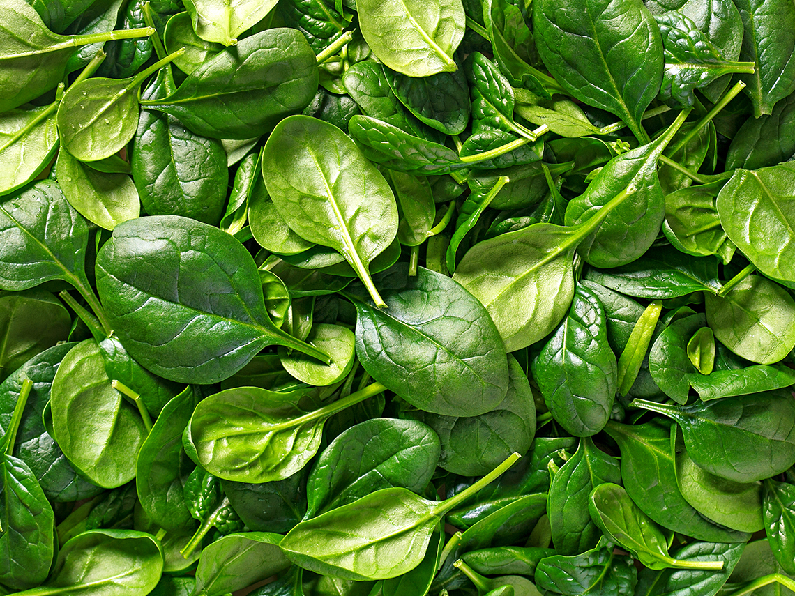
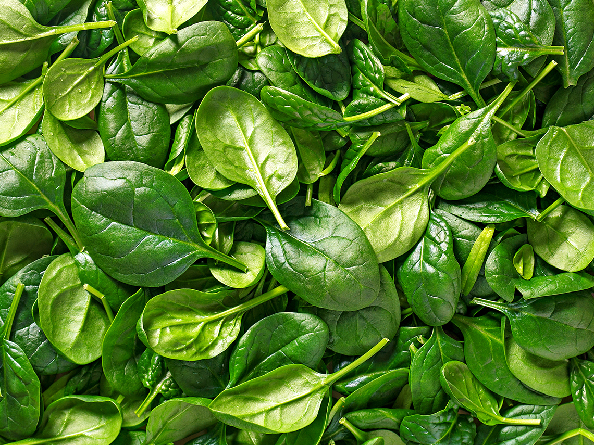

Spinach
October 07 2021,
Alenka Mestek
|
Nutrition Facts |
|
| Serving size | 30 g |
| Amount per serving | |
| Calories |
6,9 |
| % Daily Value* | |
| Total Fat 0,1g | 0 % |
| Sodium 24mg | 1 % |
| Total Carbohydrate 1,1g | 0 % |
| Dietary Fiber 0,7g | 2 % |
| Sugar 0,1g | |
| Protein 0,9g | 2 % |
| Vitamin D 0,00mcg | 0 % |
| Calcium 29.70mg | 2 % |
| Iron 0,81mg | 4 % |
| Potassium 167mg | 4 % |
| * The % Daily Value (DV) tells you how much a nutrient in a serving of food contribute to a daily diet. 2,000 calories a day is used for general nutrition advice.
**Source: www.nutritionvalue.org |
|
SPINACIA OLERACEA. Wonderful leafy vegetables that increase the choice of fresh greens even in the winter months.
Spinach is a widely used plant, as the young leaves are used fresh in salads, the older ones are cooked and the excess crops are blanched and frozen. We sow it in early spring and autumn. We prefer to skip the summer sowings, as that is when it is flowering time.
We use leaves, these can be cooked or eaten fresh. Spinach juice is also very useful and invigorating. When cooking, put spinach leaves in boiling water, not cold, to preserve as many useful ingredients of the leaves as possible. Remove the stalks. Cooked spinach is added with milk to bind harmful oxalates to calcium so that the body removes them. We enjoy fresh plants, as the reaction of nitrates to nitrites takes place in the stations, the same applies to the stations of already cooked spinach dishes.
10 reasons to eat spinach
1. Because of your skin. Spinach contains a huge amount of vitamin A, so you should eat it if your problems are acne, wrinkles, pigmentation or pre-cancerous signs on the skin.
2. Antioxidants. Vitamin C, vitamin E, manganese, ... Spinach is great for the immune system and metabolism - it is an anti-inflammatory.
3. Folic Acid. Great for pregnant women, folic acid is also a vitamin B that is good for cell growth and regeneration.
4. Fiber. Green leafy plants contain a lot of fiber and spinach also contains a lot of water, which is a great combination for the digestive tract.
5. Iron. The food has more iron than other relatives, it is great for blood and fighting fatigue.
6. Your bones. About half a cup of spinach meets the daily recommendations for vitamin K, spinach is also great for strong bones as it also contains calcium!
7. Your eyes. The lutein in spinach helps your vision and prevents macular degeneration.
8. Low in calories. Spinach has 40 calories per cup, so you don't have to worry about quantity.
9. Energy. Nitrates in spinach have been shown to be positive in stimulating cellular activity. It’s not exactly caffeine, but it’s healthier.
10. Strength as if you were Popeye, spinach is a great food for muscles as it supplies them with fiber and oxygen. It contains a lot of potassium, which is great for muscle regeneration.
1# Sprinkle fresh spinach and mushrooms on the pizza instead of ham, bacon and eggs for a healthy factor and a great combination.
2# Use the leaves in the next cold snack sauce. If you like a garlic sauce to dip your snacks into, add a healthy spinach factor to it next time. Hummus is also a great spinach friend.

Photo credits:
iStockphoto